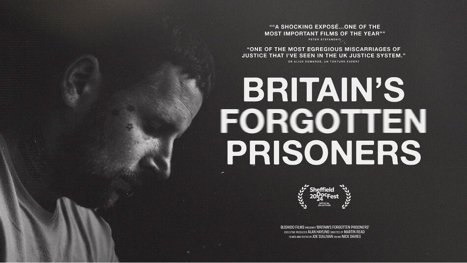
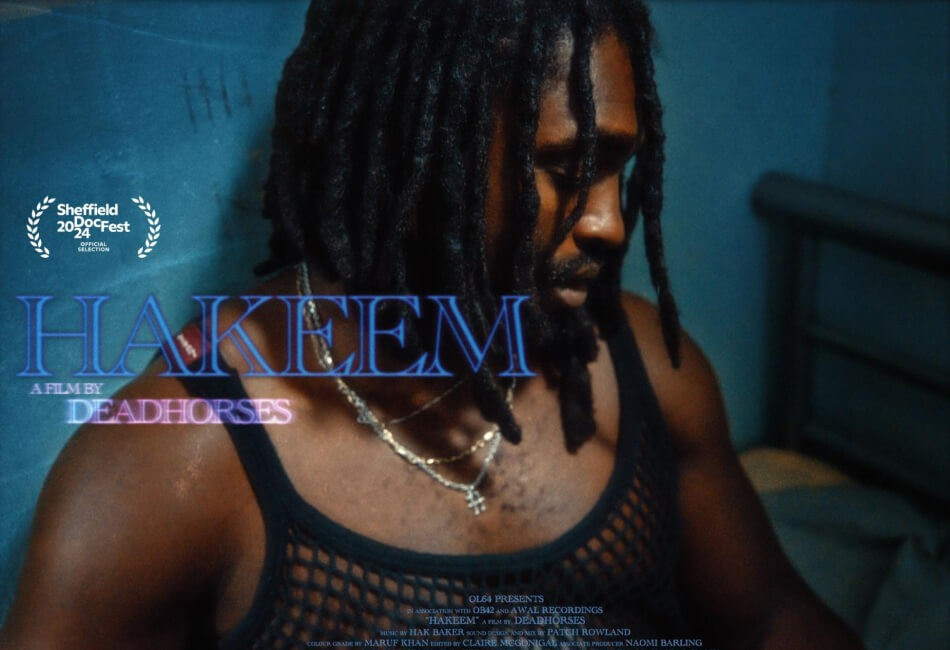

Sheffield DocFest 2024 - World Premiere of Britain’s Forgotten Prisoners & Hakeem
We’re so excited to be back at Sheffield DocFest, the UK's leading documentary festival. This year, we’re looking after the World Premieres of two outstanding documentaries.
Britain’s Forgotten Prisoners "might just be the most important film made in the UK this year. For anybody interested in justice – or rather injustice – it’s unmissable" (Guardian). The film uncovers the shocking true stories of thousands of people trapped in English and Welsh prisons, often with no idea of when they will be released. Filmed over six years by award-winning filmmaker and journalist Martin Read and his creative partner Joe Sullivan, Britain’s Forgotten Prisoners is the first feature-length film to expose Imprisonment for Public Protection (IPP) sentences.
Hakeem is about British-Jamaican singer-songwriter and poet, Hak Baker. The film chronicles his unexpected yet remarkable rise to fame: from winning a guitar in a prison raffle to performing for a sold-out crowd at The Royal Albert Hall. Hakeem is the feature documentary debut of DEADHORSES (James Topley and Ivo Beckett), who have worked with artists such as Sam Fender and Pete Doherty (The Libertines). Filmed over five years and made from over 500 hours of home video footage, the documentary gives an insight into Hak Baker’s life growing up in East London’s Isle of Dogs and explores brotherhood, the nuances of British 'lad culture' and mental health struggles.
